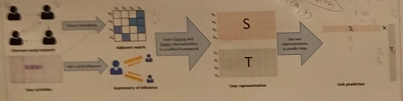

介绍
给你一段时间内的社交网络关系，我们能否预测出成员之间在未来的互动？ 我们称该问题为Link prediction Problem.常见的应用就是社交网站的好友推荐，在信息生物中预测蛋白质间的相互影响，预测犯罪嫌疑人的关系，商品推荐等等。
首先介绍一下社交网络的几个有趣的性质：
power law degree distribution
the small world phenomenon
the community structure (clustering effect)
etc
Power law degree distribution: 大部分人都只有很少的链接，但是有一小部分人，他们的链接的数量远远多于其他人。
Small-World Phenomenon: 或者叫六度空间，你和任何一个陌生人之间所间隔的人不会超过六个
community structure (clustering effect): 社交网络里面会有很多个小群体，他们都相互认识彼此。
那么到底要怎么去做link predction呢，目前传统的方法，有Path-based Methods,Neighbor-based Methods等等。下面是他们的介绍。
Path-based Methods
Graph Distance
一个最直接的预测方法就是计算两个结点间的距离，然后根据距离的大小来预测。但是在上百万的结点下直接用dijkstra算法是非常低效的。相反，我们可以利用small world phenomenon来提高我们的效率。
比如说要计算x，y两点距离，我们先初始化两个集合 \(S=\{x\},D=\{y\}\),然后开始S和D的集合，扩展的方法就是不断地把集合里面元素的邻居放进去，直到S和D相同的元素为止。根据small world phenomenon来说，扩展的次数不会太多。另外效率起见，我们一般选择元素数量较少的那个来扩展。
Katz (Exponentially Damped Path Counts)
我们还可以考虑用x，y之间存在的路径的数量来衡量它们的距离。然而，路径有长有短，一般认为，那些很长的路径其实是没什么说服力的，于是引入指数衰减机制随着路径长度进行衰减。 \[ Score(x,y)=\sum_{l=1}^{\infty}\beta^l|path_{x,y}^l| \] \(\beta\)就是指数衰减的系数，\(path^l\)表示那些长度为l的路径。
Hitting Time
为了加快计算速度，可以使用蒙特卡洛的技术来估计x，y的路径的数量。从x出发，在附近随机的跳转，如果到达y，则记录下这次到达y的所需跳转次数。最后我们用 总跳转次数/到达y的次数 来表示距离。 \[ Score(x,y)=-H_{x,y} \] 其中\(H_{x,y}\)为总跳转次数/到达y的次数，我们取负H来表示评分,H越小表示越近则越好。
Rooted PageRank
然而，如果y是一个非常有影响力的人，那么很多人都能在非常少的跳转次数下到达y，为了减轻这效应，我们增加一个随机“reset”的机制以及不停。当到达y时，以概率跳回x，以\(1-\alpha\)继续随机游走。并记录下经过y的次数。 \[ Score(x,y)=-H_{x,y}\pi_y \] 其中\(\pi_y\)表示那么多次跳转经过y概率。
Neighbor-based Methods
Common Neighbors
当两个用户有着很多个相同的邻居，我们就认为这两个用户很有可能建立联系。所以两个用户的相似性就用 \[ Score(x,y)=|\mathcal{T}(x)\cap\mathcal{T}(y)| \] 其中\(\mathcal{T}(x)\)表示x的邻居。实际上这个方法揭示了一个叫“closing a trangle”的现象
Jaccard’s Coefficient
然而Common Neighbors有一个很大的问题，假设有一个人有非常多的邻居，那么所有人都会被预测成会更他互动了，所以，我们还要把他们邻居的数量考虑进去，于是我们认为，如果两个人共同邻居的数量在他们所有好友数量中占比越大，就认为可能建立联系。即 \[ Score(x,y)=\frac{|\mathcal{T}(x)\cap\mathcal{T}(y)|}{|\mathcal{T}(x)\cup\mathcal{T}(y)|} \]
Adamic/Adar (Frequency-Weighted Common Neighbors)
这个方法同样是对Common Neighbors的改进，当我们计算两个相同邻居的数量的时候，其实每个邻居的“重要程度”都是不一样的，我们认为这个邻居的邻居数量越少，就越凸显它作为“中间人”的重要性，毕竟一共只认识那么少人，却恰好是x，y的好朋友。 \[ Score(x,y)=\sum_{Z\in \mathcal{T}(x)\cap\mathcal{T}(y)}\frac{1}{\log |\mathcal{T}(z)|} \]
Friendes-mearsure
既然两个人有相同的好友可以表达他们间的距离，那么我们可以把这一个思想推广，我们认为，他们的好友之间很有可能互为好友。我们就计算他们好友之间互为好友的数量作为评价标准。
Preferential Attachment
另外，如果两个用户拥有的好友数量越多，那么就越有可能更愿意去建立联系。也就是“富人越富”原则，基于这思想,用他们两个用户的好友数量的乘积作为评分。 \[ Score(x,y)=|\mathcal{T}(x)||\mathcal{T}(y)| \]
Link Prediction with Personalized Social Influence
上面的方法只考虑了结构，现在介绍一种考虑了用户行为的方法，比如转发，评论，点赞等。
这里考虑一种低秩表达,S和T，使得未来会建立联系的用户i和用户j有, \[ S_iT_j>S_iT_{n} \] 其中(i,n)是那些不会建立联系的人。

用一个sigmoid函数来表达下一时刻会active的概率。这里的f使用了log函数，主要考虑了其影响是随着次数指数衰减的。
最后给出一个目标函数通过优化得到S和T。
Link Prediction via Subgraph Embedding-Based Convex Matrix Completion
还有另外一个方法，它考虑了subgraph.
基本思想就是，每个结点，用广度优先搜索就可以得到不同深度的子图，然后利用这些结构信息来embedding,最后通过将不同深度得到的embedding concat在一起，就得到了这个结点的embedding. 最后就用这些embedding的余弦相似度来做link prediction.
References
What will Facebook friendships look like tomorrow?
Link Prediction via Subgraph Embedding-Based Convex Matrix Completion. Zhu Cao, Linlin Wang, Gerard De melo.AAAI 2018.
Link Prediction with Personalized Social Influence. Huo, Zepeng, Xiao Huang, Xia Hu. AAAI 2018。